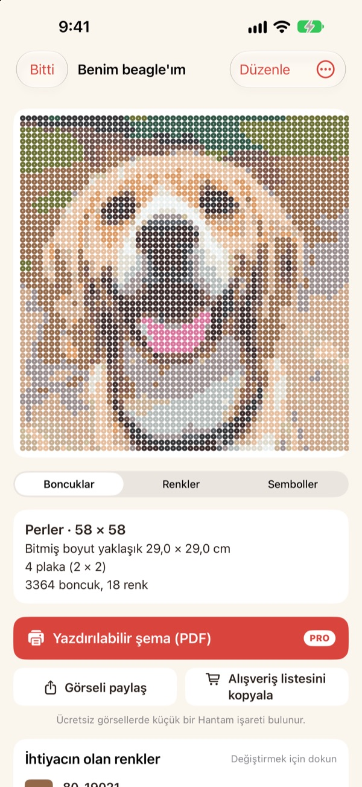
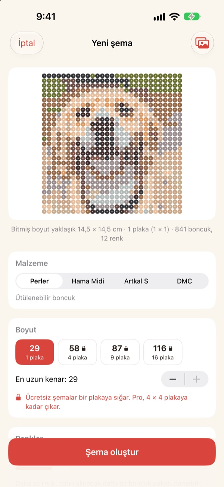
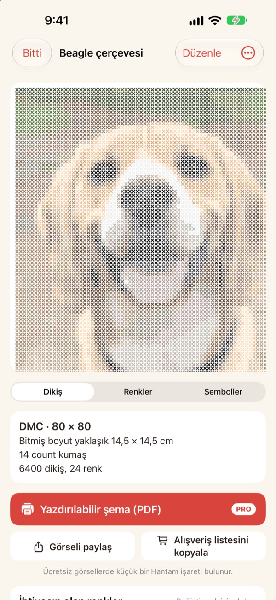
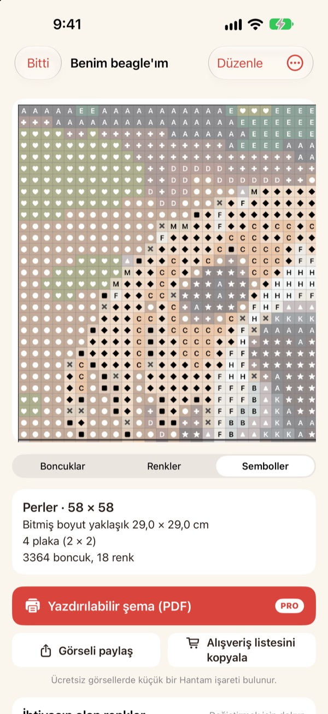
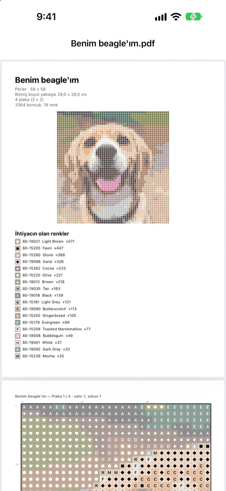

Bir fotoğraf
bir şemaya dönüşür
Evcil hayvanının, kendi yüzünün ya da sevdiğin karakterin fotoğrafını seç. Hantam onu satın alabileceğin renklerle ütülenebilir boncuk ya da kanaviçe şemasına çevirir.
Tek pano boyutundaki şemalar ücretsiz. Fotoğrafların iPhone’undan çıkmaz.

Bir fotoğrafla dene
Uygulamadakiyle aynı renk eşleştirme, gerçek Perler renk kartıyla. Boyutu ve renk sayısını değiştir ya da kendi fotoğrafınla dene.
Şema yapmak kolay, gerçek boncuk renklerini tutturmak zor
Bir fotoğrafı herhangi bir düzenleyicide pikselleştirirsen hiçbir boncukta ya da iplikte olmayan renkler çıkar. Sonra her karenin hangi kavanozdan geldiğini tahmin edip her renkten kaç tane alacağını saymak zorunda kalırsın. Hantam yalnızca gerçekten satılan renkler arasından seçer ve kaç tane gerektiğini tam olarak söyler.
Gerçek renkler, gerçek numaralar
Perler, Hama Midi, Artkal S boncukları ya da DMC ipliği seç. Her kare, o markanın gerçekten sattığı bir renge numarasıyla birlikte eşlenir.
Boyutu ve renk sayısını sen belirlersin. Büyük şemalar 29 × 29 panolara bölünür.

Kanaviçe de olur
DMC ipliği seç, aynı fotoğraf kanaviçe şemasına dönüşsün. 11, 14, 16 ya da 18 count Aida kumaş seçtiğinde Hantam bitmiş boyutu ve her rengin kaç ilmek tuttuğunu gösterir.

Ne alacağını tam olarak bilirsin
Sembol şemasına geçip kare kare ilerle; her pano kenarında ya da her 10 ilmekte kalın çizgiler var. Her rengin kaç boncuk tuttuğunu gör ve Alışveriş listesini kopyala ile tek dokunuşta al.
Değiştirmek için bir kareye dokun ya da bir rengi tüm şemada başka bir renkle değiştir.

Yazdır ve başla
Pro ile Yazdırılabilir şema (PDF) dışa aktar: önce renk listesi, ardından pano pano ayrılmış sembol şemaları.

Üç adımda şema
- 1
Fotoğraf seç
Evcil hayvanlar, yüzler, logolar ve karakterler olur. Konusu net fotoğraflar en iyi sonucu verir.
- 2
Boncuk ya da iplik seç
Markayı, boyutu ve renk sayısını belirle.
- 3
Yapmaya başla
Ekrandaki şemayı takip et ya da Pro ile yazdır.
Malzemeler ve boyutlar
- Perler · Hama Midi · Artkal S
- Ütülenebilir boncuk, 29 × 29 panolar, her boncuk yaklaşık 5 mm
- DMC
- 11, 14, 16 ya da 18 count Aida üzerine kanaviçe ipliği
- Ücretsiz
- Boncukta 1 pano (29 kare), iplikte uzun kenarda 40 ilmeğe kadar
- Pro
- Boncukta 4 × 4 pano (116 kare), iplikte 200 ilmeğe kadar
- Renkler
- Şema başına 2 ile 50 arası
Perler, Hama, Artkal ve DMC, ilgili sahiplerinin ticari markalarıdır. Hantam'ın bunlarla bir bağlantısı yoktur. Ekrandaki renkler gerçeğinden biraz farklı görünebilir.
Ücretsiz başla. Büyük şemalar ve yazdırma için Pro.
Ücretsiz
- Bir pano ya da 40 ilmeğe kadar şemalar
- Tüm markalar: Perler, Hama, Artkal ve DMC
- Renk başına adet, alışveriş listesi ve renk değiştirme
- En fazla 3 kayıtlı şema
- Küçük Hantam işaretli görsel paylaşma
Hantam Pro
- Yazdırılabilir PDF şemalar
- 4 × 4 pano ya da 200 ilmeğe kadar
- Sınırsız kayıtlı şema
- İşaretsiz görseller
- Tüm piksel sanatı araçları
Aylık ya da yıllık abonelik veya tek seferlik ömür boyu satın alma
Pro'yu uygulamadan bir arkadaşına hediye de edebilirsin.
Sık sorulan sorular
Fotoğraflarım bir yere yükleniyor mu?
Hayır. Fotoğraflar ve şemalar yalnızca iPhone’unda işlenir ve kaydedilir.
Renkler boncuklarımdan biraz farklı görünüyor.
Ekran renkleri plastikten ve iplikten farklı gösterir. Listede bir renge dokunarak onu aynı markadan daha yakın bir renkle değiştirebilirsin.
Bir şema ne kadar büyük olabilir?
Ücretsizde bir 29 × 29 pano ya da uzun kenarda 40 ilmek. Pro ile 4 × 4 panoya (116 boncuk) ya da 200 ilmeğe kadar.
Hangi fotoğraflar en iyi sonucu verir?
Tek bir konusu ve sade bir arka planı olan fotoğraflar. Renk ne kadar azsa şema o kadar temiz olur; sonuç karışık görünüyorsa renk sayısını düşür.
Hâlâ piksel sanatı yapabilir miyim?
Evet. Fotoğrafları pikselleştirme, 110 örneğe bakarak çizme ve kare kare animasyon hâlâ var. Tüm piksel sanatı araçları Pro'da.
Satın alımımı nasıl geri yüklerim?
Uygulamanın ayarlarını aç ve Satın Alımları Geri Yükle düğmesine dokun. Pro'yu satın aldığın Apple Hesabı'nı kullan.
Aboneliği nasıl iptal ederim?
iPhone Ayarlar › adın › Abonelikler bölümünden Hantam'ı seç. Ömür boyu erişim tek seferlik ödemedir ve yenilenmez.
Bir hatayı nasıl bildiririm ya da öneride bulunurum?
En hızlısı uygulama ayarlarından geri bildirim göndermek. Aşağıdaki adrese e-posta da atabilir ya da Instagram'dan DM gönderebilirsin (@lee25_ios).
Sorular, hatalar ve fikirler için leeo@kakao.com adresine yaz.